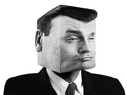

Minecraft ps3 edition
 De: La Frikipedia, la enciclopedia extremadamente seria.
De: La Frikipedia, la enciclopedia extremadamente seria.

|
Este artículo necesita ser ilustrado. Busca una afoto en nuestro depósito de imágenes o donde sea y ponla, pero que no sea pr0n, que se cabrea el señor del adSense y nos corta el grifo de los dólare. Y sin dólare no hay servidor...
|
De la serie Videojuegos:
Minecraft ps3 edition

[[Imagen:{{{imagen}}}|200px|center]]
{{{mensaje}}}
| Desarrollado por:
|
un friki de los legos
|
| Distribuido por:
|
un friki de los legos
|
| Diseñado por:
|
un friki de los legos
|
| Motor
|
el de la ps3 edición cuadrada 4x4C
|
| Género(s)
|
supervivencia y creativo (haber si consiges sobrevivir WAJAJAAJJAJAJAAJA)
|
| Fecha de lanzamiento:
|
hace miles un año
|
| Modos de juego:
|
{{{modo_de_juego}}}
|
| Requisitos:
|
tener la ps3 (con su respectiva edición cuadrada 4x4C) y haberse comprado (o como es más probable:robado) el minecraft ps3 edition
|
| Disponible en:
|
{{{disponible_en}}}
|
| Formatos:
|
un CD especial imposible de conseguir que es cuadrado
|
| Edades:
|
no se sabe,ya que los números estan cuadrados
|
| Puntuaciones:
|
no se pueden ver porque los números estan cuadrados
|
¿eres capaz de encontrar un circulo y un triángulo en minecraft?
«¡Ey tíos! como me gustan los legos y a la peña de la ps3 tambien...¿por qué no creamos minecraft ps3 edition?»
~ Aquí vemos a Mojang diciéndole a sus empleados por qué estaría bien crear minecraft ps3 edition
«Qué puta mierda cuadrada,nisiquiera tiene mods»
~ IP anónima maldiciendo a Mojang
«ssssss Ey no decías que a la peña le iba a gustar el juego sssssssss»
~ Un creeper indignado quejándose a Mojang
Minecraft ps3 edition no es nada del otro mundo,tan sólo es una copia barata para la ps3 con unos gráficos de pena a la que le faltan mods,gráficos,mobs,gráficos y más mierda
Historia de cómo se creó
Todo empezó cuando Mojanj AB creó el minecraft normal y corriente,y por supuesto,cuadrado.Al ver que tuvo éxito y gracias a youtubers como Cagueta777,TheFalsoRex,ELManquius,la audiencia en minecraft subió,y dieron a conocer el minecraft mediante vídeos cutres que luego veían sus seguidores (o no seguidores).Además,casi todos son niños rata,por lo que ahora minecraft es un juego de niños.De todas formas,el mundo está plagado de niños ratas (millones y millones),y cada uno de ellos compró el minecraft.Entonces Mojang pensó ``que tal si creamos un minecraft para la ps3 y asi jugaran el triple de millones de niños rata WAJAJAJAJJAJAJA Y ASI DOMINAREMOS EL MUNDO´´ (esto explica que el minecraft se a creado por motivos malignos).Y así fue,minecraft ps3 edition salió a la venta y ahora es un juego para niños.
¿Por qué se a creado con fines malignos?
Mientras juegas al minecraft ps3 edition intentando construir mierda,se te va metiendo dentro una sustancia maligna de control mental que,con el tiempo,transforma al que juega en un esclavo mental de Mojang (verdadero motivo por el cuál desaparecen niños ratas mientras juegan al minecraft).Cuando tengan millones y millones de esclavos mentales,Mojang piensa liberarlos contra la humanidad y asi controlar el mundo.PD:no olvidéis que esto también pasa en el minecraft aunque no sea el ps3 edition.PD2 (pedo s ):Aunque la gente sepa los malvados planes de Mojang gracias a mí,no creo que esto sirva pa na.
 así se vuelven sus esclavos mentales...
Diferencias entre minecraft ps3 edition y minecraft de ordenador
Aunque no se aprecie ni a simple vista ni con un microscopio científico con el que eres capaz de ver de que están formados los átomos,estos 2 minecraft tienen muchas diferencias:
- Los gráficos:en realidad tienen los mismo mierdas de gráficos de siempre,pero el de ordenador al menos tiene mods para mejorar los gráficos.
- Pocos mobs en ps3 edition:comparado con los mobs que tiene minecraft del ordenador (también descargando mods),el de la ps3 es una completa mierda cuadrada.Los mobs con los que cuenta minecraft ps3 edition serán listados más abajo.
- Diferentes nombres de mobs:exacto,los nombres de los mobs son distintos (ejemplo:enderman pasa a ser finalizador).
- Menos modos de juego:en el de la ps3 solo ay
3 2 modos de juego (supervivencia,creativo y extremadamente violador9,mientras que el ordenador cuenta con 4 o 5 modos de juego.
Cómo empezar
Todo el mundo empieza igual (a no ser que pongas el modo creativo),apareces en pleno bosque o montaña o desierto y tienes que apañartelas para talar árboles con la mano y crear una casa de madera que luego será destruida por un creeper.Luego tendrás que apañártelas para poco a poco construirte tú mismo una armadura,una mansión,campos de cultivo,etc.Lo mejor que puedes hacer es saquear una aldea.
Cómo acabar
Para acabar el puto juego de los cojones que se han vuelto cuadrados ya de tanto minecraft, tendrás que convertirte en enano y estar todo el día bajo tierra buscando diamantes y otra mierda evitando encontrarte monstruos.Luego tienes que matar finalizadores por la noche y obtener sus ojos (lo que no entiendo es como cojes el ojo si al matar un mob este se desintegra) aunque lo más probable es que se te rompa el arma de tanto masacrar con ella.Luego tienes que construir la estructura de el portal a The End, lo cuál no es tan fácil.Luego viene la parte dificil,y si eres un antisocial olvidate de pasar esta parte TENDRÁS QUE TRABAJAR EN EQUIPO PARA MATAR AL ENDERDRAGON aunque lo más probable es que no lo consigais, además estareis rodeados de finalizadores por culeros todo el rato.Si consiges pasar esta fase lo unico que tienes que hacer es saltar al portal que te devuelve al otro mundo (no cojas ni las bolas de experiencia ni el huevo del Enderdragón) y te salen los créditos de este puto juego cuadrado.
Mobs
Como se dijo antes,minecraft cuenta con mobs,aunque son muy pocos,de hecho,son tan pocos que parece que el juego no tiene vida (aunque ya no la tiene es obvio que ahora iene menos).
Mobs enemigos
Con mobs enemigos me refiero a que nada mas que te vean van detrás tuya para joderte y violar tu cadáver (si este no se desintegra) y robarte todo lo que tenías.
- Creepers:´ Bichejos kamikazes con cuatro patas que literalmente tienen menos cerebro que los zombis.¿Por qué no tienen cerebro? Por que por una enfermedad que ellos sufren,dejan de apreciar su vida,de manera que te explotan encima sin pensarlo ni una vez y lo hacen solo para joderte a ti,a tu casa,y al suelo.
- Zombis:son unos sunámbulos que nunca mueven los brazos y además saben atacar mentalmente.¿Por qué atacan mentalmente?Pues por que,si te fijas bien,cuando te atacan no te pegan con los brazos (ya que no los mueven),ni con las piernas,ni a cabezazos,de manera que he llegado a esa conclusión.Además hacen ruidos exraños que ni un retrasado haría,así que todos creen que son marginados,pero no piensan lo mismo cuando estan tan tranquilos picando mierda bajo tierra y derrepente escuchan AAAAAAAAARGH. Pero para colmo existen zombis con armadura u zombis aldeanos que son más resistentes e idiotas.
- `Arañas:son un cuadrado pegado a 8 rectángulos que no aguantan ni 2 golpes que solo aparecen en cuevas (casi nunca),por la noche y por la mañana se hacen buenas solo para que por la noche se vuelvan malas otra vez y te maten a cabezazos.
- Espectros:son cubos gigantes con tentáculos que vuelan y dan gritos de maricón.La única manera de matarlos si están en el aire es lanzándoles flechas con tu puto arco (si es que tiene alcance)
- Esqueletos:Unos cuantos rectángulos y un cuadrado (la cabeza) que uniéndose entre sí forman a este cabrón que te lanza flechas y,a pesar de tener las cuencas vacías,no falla casi ningún disparo.
- Esqueletos wither:son unos esqueletos grises que están en el infierno por haber sido malos cuando estaban vivos (sigen siendo malos aún muertos) que tienen una espada de piedra (y aun así,son peligrosos) con cuyas cabezas se crea al Wither Boss.
Mobs neutrales
Con mobs neutrales me refiero a mobs que te atacan si tu los atacas a ellos (y normalmente no van solos) o si les miras (ya que les da verguenza que los mires porque son feos):
- Finalizadores:son unos extraños humanoides negros altos con los ojos morados que pasan de ti.O almenos hasta que los miras a los ojos,si haces esto cojerá un bloque cualquiera del suelo para teletransportarte a tu culo y destrozarte a ostias con él (aunque sea un bloque de arena).Si lo matas de alguna manera u otra tienen la posiblidad de que al morir se desintegren todas sus partes menos uno de sus ojos,el cual te sirve para hacer el portal a The End.
- Porqueros zombi:normalmente los cerdos son buena gente,tan buena gente que cuando mueren y se hacen zombis te ven y no te atacan.La pregunta es ¿por qué entonces están en el infierno?.Es una pregunta sin respuesta,al igual que lo que los hace resistentes al fuego).Por muy buena gente que sean,si tu atacas a 1,te vienen los demás y te muelen a ostias todos juntos.
- Lobos:normalmente si vas por el bosque y encuentras un lobo en el bosque te ataca y te come,pero en minecraft puedes pasar al lado de uno y te mira y ya está.Al menos eso crees hasta que le pegas por error y él y sus amigos te comen a mordiscos.
- Ocelotes:son unos guepardos raros que nada mas que te ven salen corriendo,la única manera de que se acerquen a ti,es quedándote parado con un pescado muerto en la mano ay en medio como un subnormal hasta que aparezca 1 y se acerque a ti.
- Gólem
aéreo :un día lluvioso,oscuro y extremadamente chungo,los zombis llegaron y asaltaron tu campo de cultivo.Entonces cuando se hizo de día decidiste poner un espantapájaros.Hiciste uno con paja y con madera,pero resulta que a los zombis les gusta comerla,así que volvieron a asaltar tu campo de cultivo.Luego probaste con unos cuantos bloques de metal.Los zombis se rompieron los dientes pero aun así saquearon tus campos del cultivo.Luego provaste a hacer lo mismo (es decir poner metal),pero en la parte de arriba,pusiste una calabaza (pensando que los zombis se asustarían de ella) y,al estilo Frankestein,EL ESPANTAPÁJARO COBRÓ VIDA (y luego ya no tenía la calabaza).Este gólem defenderá tus cultivos y no te hará nada a ti.Pero si le atacas por error te pega con sus super rectángulos largos (y no hablamos de pollas) y te revienta de 2 golpes.
- Muñeco de nieve:un día nublado,fresquito y con nieve,decidiste poner un bloque de nieve y ponerle encima una calabaza,y al estilo Frankestein,EL MUÑECO DE NIEVE COBRÓ VIDA.Luego decidiste ver si tenía alguna utilidad,así que te metiste en modo creativo y ponerle un huevo de zombi delante.Efectivamente,después de lanzarle más de 20 bolas de nieve,el muñeco mató al zombi (seguro que más bien de pulmonía).Te recomiendo poner 10 muñecos de nieve a la vez si quieres que sean útiles.También puedes ponerlos sobre tejados,ya que lanzan bolas de nieve y nunca fallan (esto es debido a que se entrenaron en la mili como francotiradores).
Mobs amistosos y mobs pasivos
Con mobs amistosos me refiero a mobs a los cuales les pegas y no te hacen nada y con mobs pasivos me refiero a lo mismo,sólo que lo más probable es que estos salgan corriendo.
- Aldeano:son unos mobs muy especiales,no tienen la cabeza cuadrada,la tienen rectangular,además tienen cara de calamardo.Estos te venden mierda a cambio de...algo.
- Lobos domesticados:si le das un hueso a un lobo,ya es tuyo pa siempre y te ayudará a matar de todo menos creepers,pues se caga de ellos y sale una mierda cuadrada.
- Ocelotes domesticados:si consiges hacer lo que expliqué mas arriba,lo domarás,además los ocelotes tienen los cuadralizados cojones de atacar a los creepers aunque luego mueran en su explosión.
- Vacas y champiñacas:Las vacas son unos rectangulos gordos que no hacen mas que mujir y dar leche.Las champiñacas son unas vacas rojas con champiñones en la espalda que sirve para lo mismo.Además se pueden esquilar... y hacer un estofado de champiñoes con ellas.
- Pollos:son un medio cuadrado muy extraño que cada 5 o 10 minutos ponen huevos sin fecundar que tu los usas para lanzárselos a los mobs hostiles.
- Ovejas:mobs de color blanco negro y marrón que dan lana al morir (se puede crear cualquier lana)
- Cerdos:son unos mobs feos y gordos que solo sirven para comer o para...montárlos como montura.
Mobs jefes
En minecraft ps3 edition faltan muchos mobs,por ejemplo Herobrine,La mismísima Muerte,La Reina Araña,La Puta Cuadrada.
- Enderdragón:es un dragón hembra (la única hembra del juego) que al matarlo te pasas el juego y sus habilidades son lanzarte fuego fantasmal (fuego azul) y embestirte.
- Wither Boss:es un bicho que se crea con 3 cabezas de esqueletos wither y arena de alma que es tu segunda pesadilla después de un creeper.Este cabrón lanza cabezas que esplotan.Yo te recomiendo ponerlo dentro de tu casa (no hay trucos),porque si lo pones fuera se va volando (sin plumas ni nada).También puedes ponerlo cerca de tus construcciones favoritas,no te preocupes no les pasará nada.
Reproducción
Todos creen que en minecraft TODOS se reproducen al mismo estilo:con huevos...sin embargo,eso es toda una mentira.
¿Cómo se reproducen entonces?:en realidad es muy fácil,con esporas (esto es lo que lo diferencia al minecraft ps3 edition del minecraft de la xbox y el PC).Siempre hemos creido que esos huevos que tenemos tan felices son de donde salen los mobs (no estoy hablando de esos 2 que están ay colgados),pero yo os diré la verdad.Todo empieza cuando matamos a cualquier mob (incluyendo zombis y esqueletos,lo creas o no),cuando lo matamos este suelta unas bolitas feas que nos suben el nivel...pero los mobs nos engañan a todos como idiotas.Las bolitas tienen una sustancia que atrae humanoides cercanos (como una mosca a una planta carnívora),éstos humanoides van como locos a por las bolitas para subir experiencia,sin embargo,esa bola va creciendo dentro de ti como un virus hasta que se hace demasiado grande y no cabe dentro tuya (ya te imaginas qué pasa).Luego de haberte matado desde dentro,el volumen de esta espora-bola se reduce hasta el tamaño de un huevo,y adquiere su forma (de huevo).Luego nace y ya está.Conclusión:no cojas bolitas-espora de experiencia o tu personaje morirá en cuestión de dias,meses o años.PD:aún es un misterio los huevos-espora de los pollos.
enlances externos
Minecraft
Autor(es):
- Fordus
- AztroCat01
- Dkarlos
- Aly
- God69
- RFS Gameplayer
Frikipedia 2005-2016, Licencia
GFDL 1.2 - Extraído por FrikiLeaks